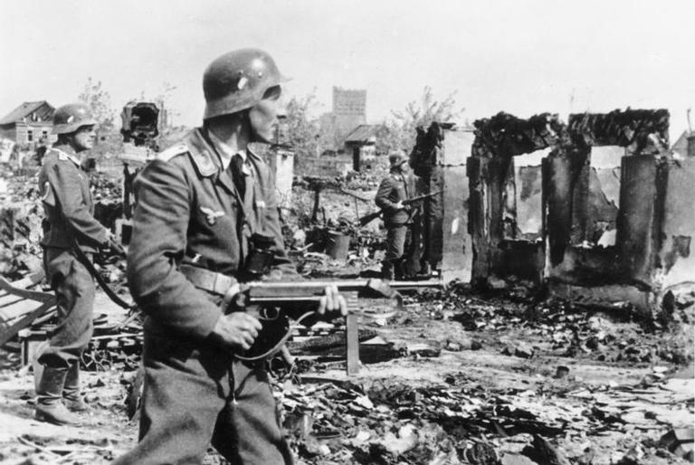

A Batalha de Stalingrado
A Batalha de Stalingrado foi um grande combate travado entre a Wehrmacht (o exército da Alemanha Nazista) e seus aliados do Eixo contra as tropas da União Soviética pela posse da cidade de Stalingrado (atual Volgogrado), às margens do rio Volga, entre 23 de agosto de 1942 e 2 de fevereiro de 1943, durante a Segunda Guerra Mundial. A batalha foi um dos pontos de virada da guerra na Frente Oriental, marcando o limite da expansão alemã no território soviético, a partir de onde o Exército Vermelho empurraria as forças alemãs até Berlim.
Marcada por violentos combates em ambientes fechados, privações e desrespeito e desprezo pela vida de militares e civis, a luta em Stalingrado acabou sendo a maior (mais de 2,2 milhões de soldados envolvidos) e mais sangrenta (1,8 a 2 milhões de mortos, feridos ou capturados) batalha na história das guerras. Após serem derrotados, o Alto Comando alemão teve que retirar e relocar várias tropas estacionadas na Frente Ocidental para o leste, a fim de substituir suas perdas.